Bilgisayar Mühendisi · Garanti BBVA Teknoloji'de yaklaşık 3 yıldır Full-Stack Geliştirici olarak görev yapmaktayım. Dağıtık sistemler, derin öğrenme ve gerçek zamanlı veri işleme alanlarında deneyim sahibiyim.
Türkiye'nin en büyük fintech şirketlerinden Garanti BBVA Teknoloji'de yaklaşık 3 yıldır Full-Stack Geliştirici olarak görev yapmaktayım.
Java Spring Boot (gRPC + REST), React, Apache Kafka ve mikroservis mimarisi üzerine üretim ortamında deneyim sahibiyim.
İş hayatımın yanı sıra derin öğrenme tabanlı orman yangını risk tahmini ve yapay zekâ destekli havacılık bakım platformu gibi araştırma projelerini yürütmekteyim.
Dağıtık sistemler, bilgisayarlı görü ve gerçek zamanlı veri işleme alanlarında aktif olarak çalışmalar yürüten bir mühendisim.
Türkiye'nin Akdeniz bölgesi için geliştirilen derin öğrenme tabanlı yangın risk tahmin sistemidir. 500 metre mekânsal çözünürlük ve aylık zaman dilimlerinde çok kaynaklı jeo-uzamsal veriler (uydu görüntüleri, iklim verileri, topoğrafya ve bitki örtüsü indeksleri) işlenerek yangın olasılık haritaları üretilmektedir.
Özgün FireNetHybrid V6 mimarisi geliştirilmiştir: CNN omurgası üzerinde CBAM (Convolutional Block Attention Module) dikkat mekanizması, BiLSTM ile zamansal örüntü çıkarımı, 4 başlıklı zamansal dikkat (Multi-Head Temporal Attention) ve GeM (Generalized Mean) havuzlama katmanları bir arada kullanılmaktadır. SHAP analizi ile model kararlarının açıklanabilirliği sağlanmıştır.
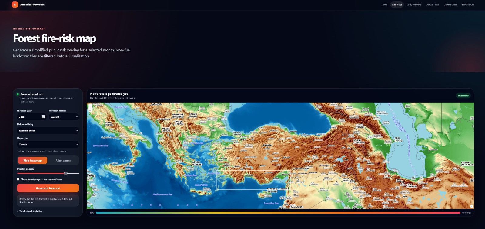
Artırılmış gerçeklik (AR) ve yapay zekâ destekli MRO (Bakım, Onarım, Revizyon) platformudur. CNN tabanlı görsel denetim modelleri ile uçak gövde yüzeyindeki kusurlar (çizik, çatlak, korozyon vb.) gerçek zamanlı olarak tespit edilmektedir.
AR arayüzleri sayesinde bakım teknisyenleri, kusurlu bölgeleri kamera görüntüsü üzerinden doğrudan görebilmekte ve adım adım rehberlik alabilmektedir. TUSAŞ Hangar Girişimcilik Programı'na kabul edilerek mentorluk ve teknik destek kapsamına alınmıştır.
Üniversite öğrencilerine yönelik bulut tabanlı çalışma grubu yönetim platformudur. Ders bazlı gruplar oluşturulabilir, çevrimiçi oturumlar planlanabilir ve grup içi gerçek zamanlı mesajlaşma yapılabilir.
Kanban tarzı görev panosu ile ödevler takip edilebilir, Pomodoro zamanlayıcı ile odaklanma seansları yürütülebilir ve paylaşılan materyaller (PDF, bağlantı vb.) kaynak kütüphanesinde saklanabilir. Docker ile konteynerize edilmiş, GitHub Actions ile CI/CD pipeline'ı kurulmuştur.
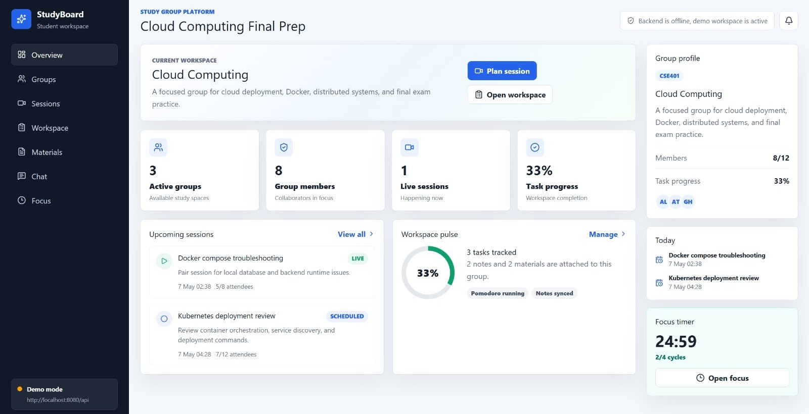
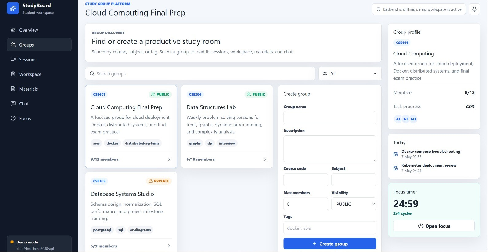
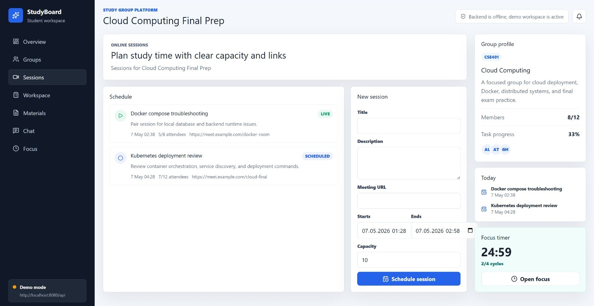
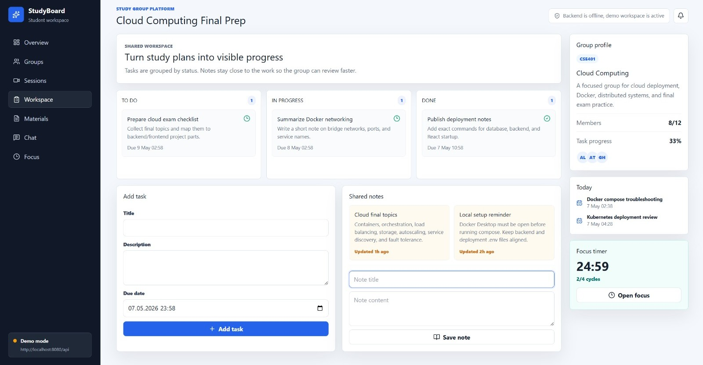
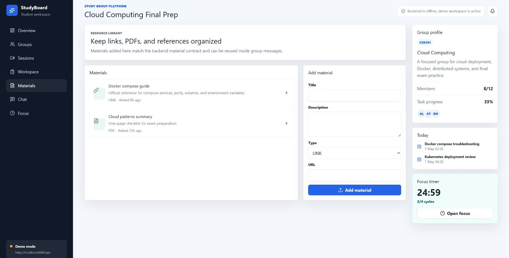
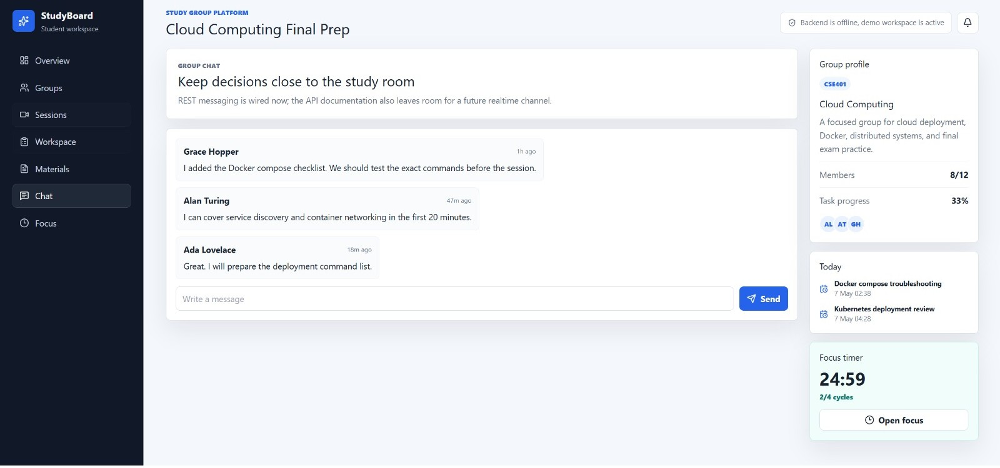
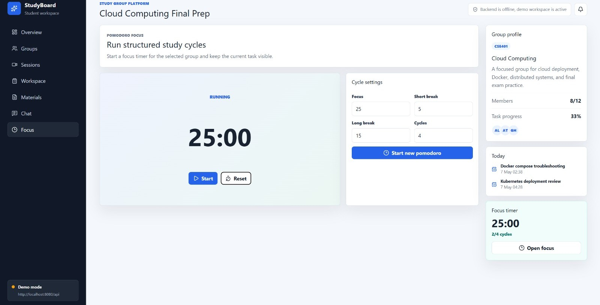
Columbia Üniversitesi Speed Dating veri seti üzerinde romantik uyumluluğu tahmin eden ikili sınıflandırma (binary classification) projesidir. 195 özellik arasından 27 temel özellik seçilerek demografik bilgiler, ilgi alanı korelasyonları ve hobi puanları kullanılmıştır.
Veri setindeki ciddi sınıf dengesizliği (%16.8 eşleşme oranı) stratified örnekleme ve sınıf ağırlıklandırma ile yönetilmiştir. Random Forest ve XGBoost algoritmalarının karşılaştırılması sonucunda XGBoost, AUC metriğinde %5.2 göreli iyileşme sağlamıştır. Özellik önem analizi, ortak ilgi alanlarının (int_corr) en güçlü tahmin edici olduğunu ortaya koymuştur.
Sistem Programlama (CENG 209) dersi kapsamında C dilinde geliştirilen metin tabanlı macera oyunudur. Oyuncu, birbirine bağlı odaları keşfeder; yolda eşyalar toplayabilir, yaratıklarla savaşabilir ve mağazadan alışveriş yapabilir.
Dinamik bellek yönetimi (malloc/free), bağlı liste yapıları ile envanter sistemi, dosya I/O ile oyun durumu kaydetme/yükleme ve Makefile tabanlı derleme sistemi kullanılmıştır. Komut satırından move, pickup, attack, inventory gibi komutlarla etkileşim kurulur.
Üniversite bünyesindeki FIFA kulübü için geliştirilen turnuva yönetim platformudur. Oyuncular kayıt olabilir, maç takvimini görüntüleyebilir ve sıralama tablosunu takip edebilir. EA SPORTS FC haberlerinin otomatik olarak listelendiği bir haber bölümü de bulunmaktadır.
GitHub Pages üzerinde canlı olarak yayınlanmakta olup saf HTML, CSS ve JavaScript ile geliştirilmiştir.
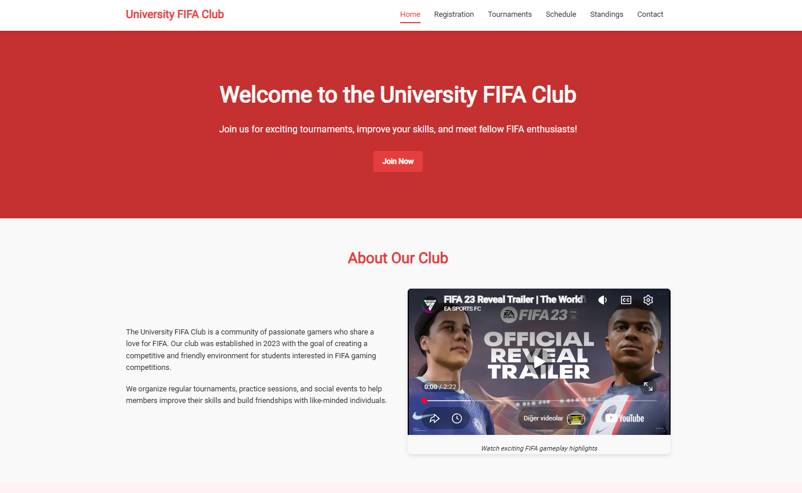
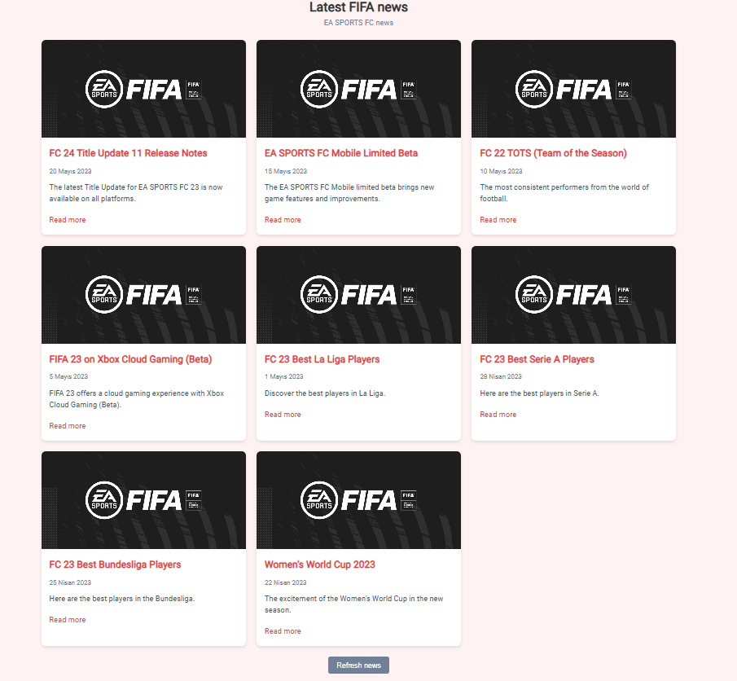
Nesne Yönelimli Programlama (OOP) dersi kapsamında 4 kişilik ekiple geliştirilen masaüstü uygulamasıdır. Qt Framework ile oluşturulan grafik arayüz üzerinden 118 elementin tüm fiziksel ve kimyasal özellikleri görüntülenebilmektedir.
Kategori bazlı renklendirme (alkali metaller, soy gazlar vb.), isim veya sembol ile arama/filtreleme ve bilgi seviyesini ölçen quiz modu içermektedir. Doxygen ile kapsamlı teknik dokümantasyon oluşturulmuştur.
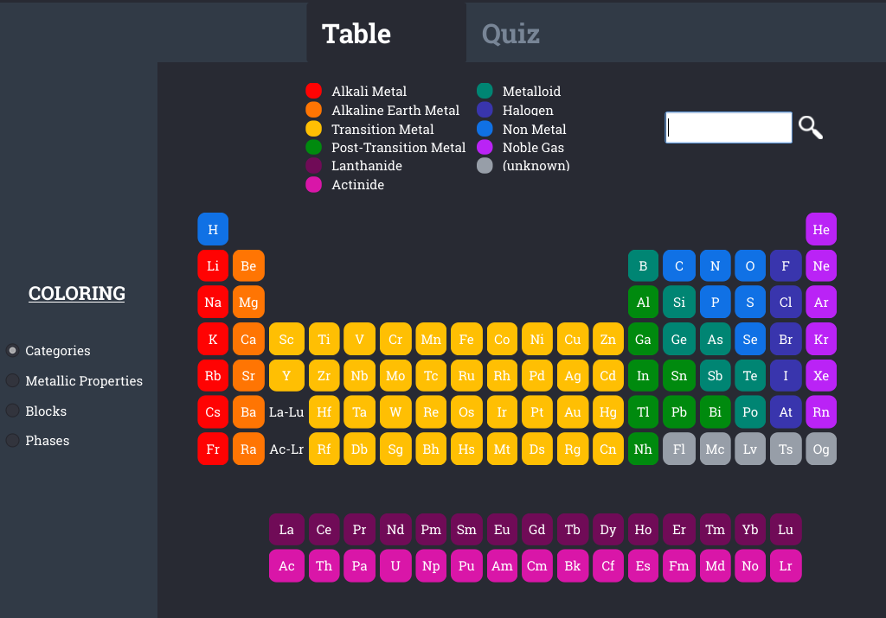
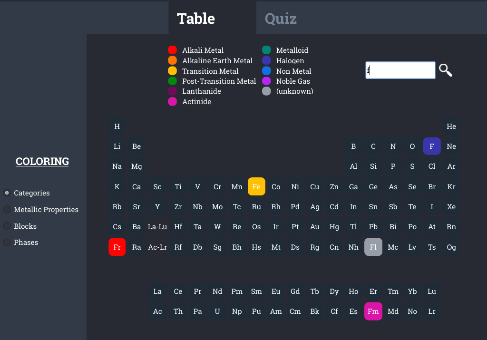
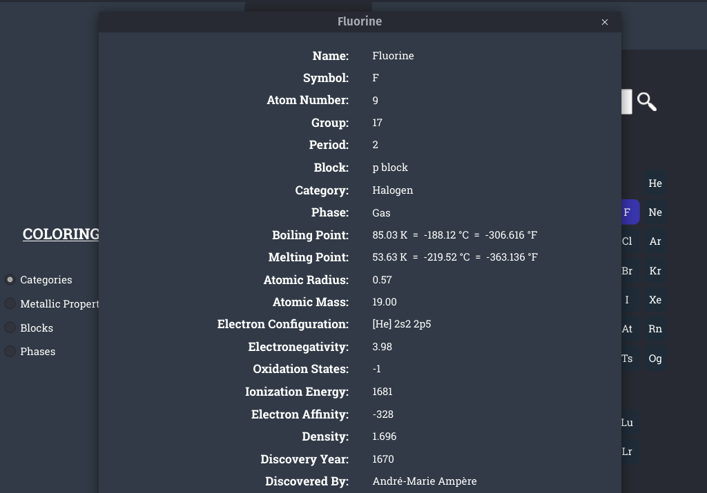